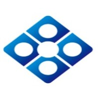

Experience
Net Developer
(3.5+ yrs)
Finstro, Philippines Inc, Taguig City
2022-June - Present
- Worked in an Agile, fast-paced environment with a focus on finding optimal solutions.
- Designed and wrote clean, scalable code using .NET Core programming languages.
- Tested, revised, updated, refactored, debugged, and deployed code.
- Provided technical support for the backend side of internal web applications.
- Contributed to maintaining code quality through participation in code reviews.
- Collaborated with solution architects, DevOps teams, and product teams.
- Provided production support as needed.
Project Involvement:
- Company mobile app, website, web app portal, ledger, payment transactions, onboarding, and other internal web app
Role: .Net developer / Back-end Engineer
Tools: C#, .Net Core 3.1 & .Net Core 6, Node.Js, Angular, MySQL, AWS Services (EC2, Lambda,S3 ,RDS, DynamoDB, Cognito, Cloudwatch)
Application Development Lead
(8 mon)
Accenture, Taguig City 
2021-Aug - 2022-April
- Acquired, developed, constructed, tested, and maintained data architectures.
- Aligned architectures with business needs, leveraging large datasets to address business issues.
- Identified data inconsistencies and transformed raw data into meaningful analysis using interactive, user-friendly dashboards and reports.
- Implemented new features to enhance existing projects, such as Approver Management, Shift Scheduling, KB Articles, Knowledge Base, Email Template Management, ATOM Core, Power BI User Analytics Report, and Chatbot Integration.
- Created proof of concept for Bot Service Integration with LUIS (Language Understanding) service and MS Team Channel Integration.
- Enhanced skills through training in Data Factory, Kubernetes, and Python.
Project Involvement:
- Project for data analytics with reports generation and visualization
Role: Data Engineer
Tools: Azure Data Services (Power BI, Synapse Analytics, SQL Dedicated Pool, Serverless pool, Dev Ops, Key Vault, Storage, Datalake Storage, Data Factory)
- A ticketing system web app integrated with Azure Cloud Services used for research and development
Role: Application Team Lead / DevOps Engineer
Tools: C#, .Net Core 3.1, .Net Framework, Angular, MS SQL Server, Azure Services (App Service, Functions, Logic Apps, Cognitive Search, Key Vault, Storage, Datalake Storage, Kubernetes, Power BI, DevOps, Bot Service, Machine Learning)
Software Engineer
(4 yr 6 mon)
Indra Philippines, Inc, Rockwell Business, Pasig City
2017-Feb - 2021-Aug
- Assigned in the development and enhancement of the extensions of the Allegro Horizon(ETRM Solution) for Electric Utility Company
- Interpret data, transform data, load data and analyze the results to provide quality and accurate reports
- Participated in the development/ feature requests for data migration using an ETL tool -Microsoft SQL Server Integration Services (SSIS)
- Collaborated with some fellow engineers to develop the enhancements of the customer transaction validation, and billing operation system for independent terminal operator company
- Development and maintenance of the web-based Mapping (GIS) Applications for an Electric Distribution Company
- Analysis and Design, Documentation, Unit Test/ Functional Test/ UAT Support
Project Involvement:
- Energy Trade and Risk Management System called Allegro for electric utility company
Role: .Net Developer/ Dev Lead
Tools: C#, ASP.Net, Asp.Net Core 2, MS SQL Server, Allegro
- Electric Distribution Management System for an electric distribution company
Role: .Net Developer/ Dev Lead
Tools: C#, ASP.Net,Mvc3, HTML, CSS, Javascript, Microsoft SQL Server Integration Services (SSIS), MS SQL Server, Oracle PL/SQL, Autodesk Mapguide Studio (third party app like google map)
- Advanced Customer Transaction System for independent terminal operator company
Role: .Net Developer
Tools: C#, ASP.NET, MVC 5, Html, CSS, Javascript, JQuery, Microsoft SQL Server Reporting Services (SSRS), MS SQL Server
Junior Application Developer
(4 mon)
AMMIC Corp, Makati City

2016-June - 2016-Oct
- Responsible for bug fixing, modification and enhancement of AMMIC ERP standard applications
- Ensure that the assigned SIRs are executed properly including the unit testing and documentations
- Designing, application management and troubleshooting
Project Involvement:
AMMIC ERP for Manufacturing Industry
Role: Application Developer
Tools: AMMIC ERP, C#, MS SQL Server, Oracle PL/SQL
Web Application Developer
(1 yr)
Hyundai Asia Resources Inc, Taguig City
2015-June - 2016-May
- Assigned in the development of internal windows and web applications of the company
- Design web layout and user interface by using HTML/CSS practices
- Produce functional as well as efficient programs by clean and testable coding
- Integrate back-end data so as to create efficient web programs/applications
Project Involvement
Windows, web apps and website for the automotive company
Role: Web Application Programmer
Tools: C#, Asp.Net, HTML,CSS, Javascript, AJAX, MS SQL Server, Reporting Tools such as RDLC and Crystal Report
Systems Analyst/ Programmer
(3 yr)
Toshiba Information Equipment Philippines, Inc, Laguna
2012-May - 2015-May
- Data gathering and analysis, database designing, support or troubleshooting production issues
- Documentation, Unit Test/ UAT/ Production deployment support
- Assigned to develop Internal Windows and Web Applications of the company
- Assigned to support the Oracle Enterprise Business Suite Production and Logistic Module
Project Involvement:
Windows and web applications portal for internal company
Role: System Analyst/Programmer
Tools: C#, Asp.Net, HTML,CSS, Javascript, AJAX, MS SQL Server, Crystal Report, Oracle PL/SQL
Role: Oracle EBS – Manufacturing System (Support)
Tools: Oracle Business Suite, Oracle PL/SQL